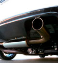

Глушители и фаркопы что нужно знать при выборе
Приёмные трубы глушителя (выпускной коллектор, так называемые «штаны» или «паук», из-за внешнего сходства) — раздельно идущие от каждого цилиндра трубы, сходящиеся в одну. Независимые трубопроводы уменьшают влияние цилиндров друг на друга...